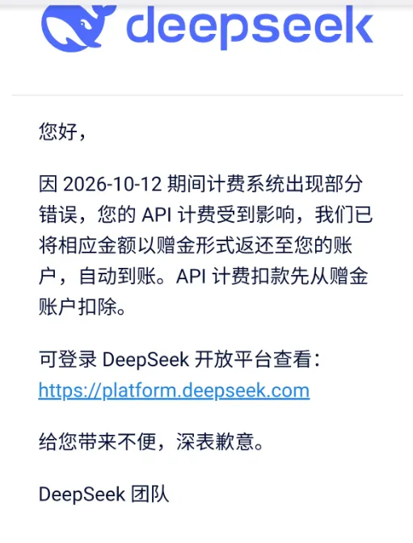

DeepSeek服务器又挂了，是在憋大招？
原文：https://mp.weixin.qq.com/s?__biz=MzAwMzIzOTk5OQ==&mid=2247543143&idx=1&sn=18bf754126e8e1df55cdf82e1d898630&chksm=9b3c5037ac4bd921588e82e67a1323434398c3f116ae6783de9d5e14bb8b8a673179e2d7830d#rd 合集：AI时代，不用就会被淘汰
DeepSeek的网页对话又挂了，前两天还出过API计费出错的bug，仿佛回到了它刚火的那段时间。不过事出反常必有原有，现在看来非常可能是Deepseek将要有一波更新。

据用户反馈，今早8:11起，DeepSeek网页对话端、V4 Pro API、V4.1 Flash API 同步出现服务中断，官方公告为「已定位原因，正在实施修复」，未披露具体故障原因。有较高概率是新版本上线前的灰度 / 架构调整(我猜的，或者说我期待是这样)，甚至段子都已经出了，一代人有一代人的秦始皇：毕竟现在deepseek能稳赢的还是GPT4o，大模型竞争太激烈了，还得追赶。一、以下是推测，看看过几天能不能命中吧：
1. 社区长期存在「DeepSeek 大版本发布前常出现服务波动、灰度切流导致短时宕机」的规律，此前 V4 系列、V4.1 Flash 上线前都出现过类似现象；
2. 产品节奏高度吻合：9月10日发布的V4.1 Flash官方明确标注为「全新架构系列中的最小尺寸模型」，同架构的旗舰版V4.1 Pro正处于待发布窗口，行业传闻的发布时间点就在10月中下旬DeepSeek(看起来就像是现在)；
3. 也存在另一种可能：近期用户量快速增长导致的基础设施压力，半个月内DeepSeek已经出现5次服务波动，不完全都是版本更新导致。这种结果就非常不利好用户了，按逻辑来说这种情况应该涨价以减少用户使用，并回收成本进一步扩建算力容量。
| 二、DeepSeek 核心产品发布完整时间线（2024-2026）发布时间 | 产品版本 | 核心定位 | 关键里程碑 |
|---|---|---|---|
| 2026.09.10 | DeepSeek V4.1 Flash | 高速轻量旗舰 | 全新非对称编解码架构（552B 总参数，输入激活 8B / 输出 16B），原生多模态，Codeforces 3471，同步下调 API 定价 |
| 2026.08.21 | DeepSeek V4 Flash Vision Exp | 多模态扩展版 | V4 Flash 的视觉增强版本，正式支持图像理解 |
| 2026.07.31 | DeepSeek V4 Pro / V4 Flash 正式更新 | 旗舰迭代优化 | V4 系列正式版，推理、代码、Agent 能力全面补全提升 |
| 2026.04.24 | DeepSeek V4 预览版（Pro + Flash） | 第四代旗舰基座 | 1.6T 总参数（Pro）/284B 总参数（Flash），标配 1M token 上下文，性能对齐 GPT-4o/Claude 3.5 Sonnet |
| 2025.12.01 | DeepSeek V3.2 正式版 / V3.2-Speciale | 推理强化旗舰 | 首次将思考链融入工具调用，IMO/CMO/ICPC 竞赛金牌级水平，Agent 能力大幅强化 |
| 2025.09.29 | DeepSeek V3.2-Exp | 效率优化版 | 引入稀疏注意力机制，API 价格直降 50% 以上 |
| 2025.01.20 | DeepSeek R1（reasoner） | 专用推理模型 | 首款深度思考模型，对标 OpenAI o1，数学与逻辑推理能力跃升 |
| 2024.12 | DeepSeek V3 正式版 | 第三代基座 | 671B 参数 MoE 架构，开源 FP8 权重，性能对齐初代 GPT-4o |
PS：考虑到Claude总是想着法的封我们的号，Biomamba的工作习惯一直是在西柚云服务器中利用claude接入DeepSeek：Claude code会话中断是可以重启的哦一文快速入门ClaudeCode Skill告别命令行！在VSCode中直接使用Claude Code编程12万stars，65行文字让ClaudeCode更好用Claude Code最佳实践：十个让Claude更好用的技巧Biomamba也离下岗不远了，直接让Claude帮我配置环境并制作教程一招教你跳过Claude频繁请求确认，实测安全有效
欢迎交流

 留一个领取资料、开箱即用的单细胞分析镜像的助手[Biomamba_zhushou]，方便各位随时交流。同时我们也构建了交流群矩阵，欢迎大家一起讨论。
留一个领取资料、开箱即用的单细胞分析镜像的助手[Biomamba_zhushou]，方便各位随时交流。同时我们也构建了交流群矩阵，欢迎大家一起讨论。
 您点的每个赞和在看，我都认真当成了喜欢
您点的每个赞和在看，我都认真当成了喜欢